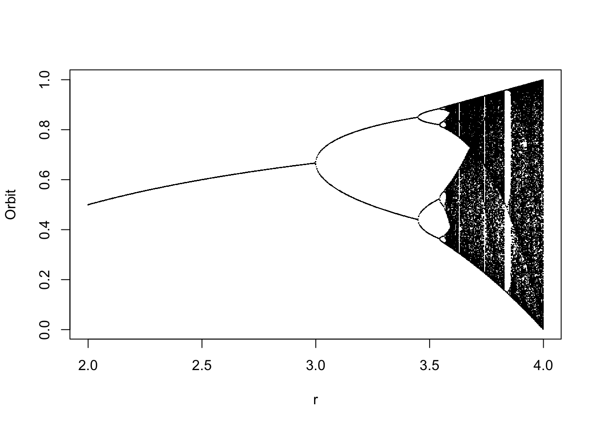
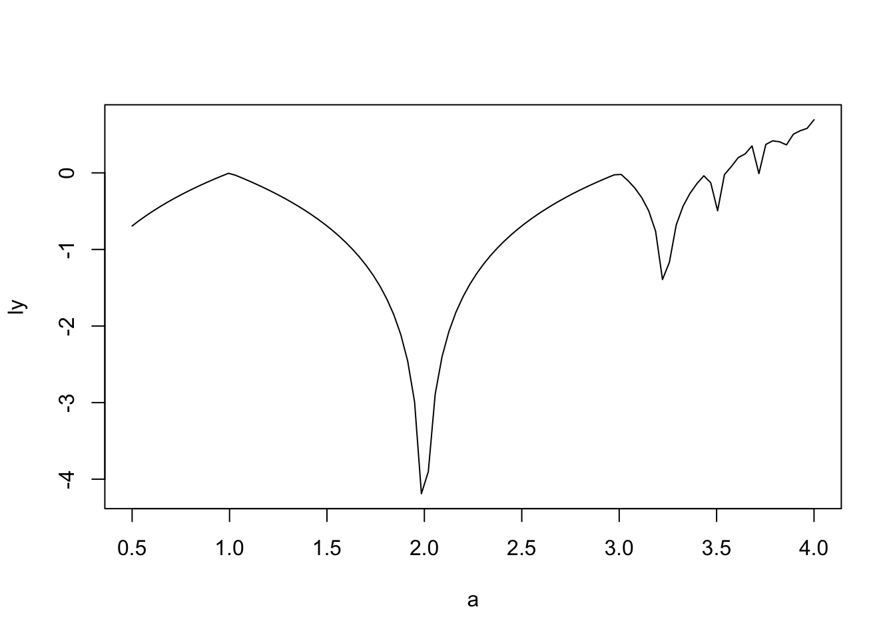

3 Feigenbaum diagram
logistic.map <- function(r, x, N, M){
## r: bifurcation parameter
## x: initial value
## N: number of iteration
## M: number of iteration points to be returned
z <- 1:N
z[1] <- x
for(i in c(1:(N-1))){
z[i+1] <- r *z[i] * (1 - z[i])
}
## Return the last M iterations
z[c((N-M):N)]
}
## Set scanning range for bifurcation parameter r
my.r <- seq(2, 4, by=0.003)
Orbit <- sapply(my.r, logistic.map, x=0.1, N=1000, M=300)
Orbit <- as.vector(Orbit)
r <- sort(rep(my.r, 301))
plot(Orbit ~ r, pch=".")
Each period doubling is called a bifurcation because a single solution splits into a pair of solutions. These splittings are called pitchfork bifurcations for obvious reasons. Note the period-3 window at about R = 3.84. The period-3 region begins abruptly when R is increased slightly from within the chaotic region to its left in what is called a tangent or saddle-node bifurcation. Careful inspection of the period-3 window shows that it also undergoes a period-doubling sequence at about R = 3.85. Solutions with every period can be found somewhere between R = 3 and R = 4.
Successive period doublings occur with ever-increasing rapidity as one moves from left to right in Figure 1-1. The ratio of the width of each region to the width of the previous region approaches a constant equal to 4.669201660910…, called the Feigenbaum number. Even more remarkable is that this number arises in many different chaotic systems in nature as well as in the solutions of equations. The universality of the Feigenbaum number in chaos is reminiscent of the ubiquity of the number p in Euclidean geometry
With R = 4 the solutions occupy the entire interval from X = 0 to X = 1. Eventually X takes on a value arbitrarily close to any point in that interval (a characteristic called topological transitivity). Curiously, however, infinitely many initial values of X don’t lead to a chaotic solution even for R = 4. For example \(X_0 = 0.5\) and \(X_0 = 0.75\) lead to unstable fixed points, while \(X_0 = 0.345491...\) and \(X_0 = 0.904508...\) produce an unstable period-2 limit cycle. By nstable we mean that if the initial values are wrong by even the slightest amount, successive iterates will wander ever farther away.
Even though there are infinitely many nonchaotic initial values between zero and one, the chance that you will find one by randomly guessing is negligible. For every such value, there are infinitely many others that produce chaos. Such a seemingly paradoxical entity is an example of a Cantor set, named after the 19th century Russian-born German mathematician Georg Cantor who is often credited with developing a mathematically rigorous concept of infinity.
A Cantor set contains infinitely many members (in fact, uncountably infinitely many), but its members represent a zero fraction of the total! For example, infinitely many points are required to cover completely the circumference of a circle, but this number of points doesn’t even begin to cover its interior. Such a collection (or set) of points, although infinite in number, is said to comprise a set of measure zero, because the points fill a negligible portion of the plane. An attractor is a set of measure zero, but its basin of attraction has a nonzero measure.
Few people would have guessed that such complexity could arise from such underlying simplicity. Furthermore, the logistic equation is only the simplest of an endless variety of equations that can exhibit chaos. It is this dichotomy of simplicity and complexity that makes chaos beautiful to the mathematician and artist alike. In the bifurcation diagram of the logistic equation, we have something with aesthetic appeal, and it came from a simple quadratic equation!
3.1 The Butterfly Effect
If our goal is to seek chaotic behavior in the solution of equations, we need a simple way to test for chaos. For this purpose we use the fact that chaotic processes exhibit extreme sensitivity to initial conditions, in contrast to regular processes in which different starting points usually converge to the same sequence of points on a simple attractor.
Suppose we iterate the logistic equation with two initial values of \(X\) that differ by only a tiny amount. Think of these values as representing two states of the atmosphere that differ only by the flapping of the wings of a butterfly. If successive iterates are attracted to a fixed point as they are for \(R = 2\), the difference between the two solutions must get smaller and smaller as the fixed point is approached. A similar thing happens for a limit cycle. The difference between the two solutions will on average decrease exponentially.
If the solution is chaotic, as is the logistic equation for R = 4, the successive iterates for the two cases initially on average get farther apart; the difference usually increases exponentially. If the difference doubles on average with every iteration, we say the Lyapunov exponent is 1. If it is reduced by half, we say the Lyapunov exponent is -1. The name comes from the late-19th-century Russian mathematician Aleksandr M. Lyapunov (sometimes transliterated Liapunov or Ljapunov).
You can think of the Lyapunov exponent as the power of 2 by which the difference between two nearly equal X values changes on average for each iteration. Thus the difference between the values changes by an average of 2 L for each iteration. If L is negative, the solutions approach one another; if L is positive, we have sensitivity to initial conditions and hence chaos.
One way to detect chaos is to iterate the equation with two nearly equal initial values and see if, after many iterations, the values are closer together or farther apart. Another way is to make use of a principle of calculus that says that the difference in the solutions after one iteration divided by the difference before the iteration, provided the difference is small, is equal to the derivative of the equation for the map, which for the logistic equation is
\[ \frac{\Delta X_{n+1}}{\Delta X_n}=R(1-2X_n) \] where \(\Delta X\) is the difference between the two values of X. In Equation 1D, \(\Delta X_n\) is the difference in the X values after n iterations, and \(\Delta X_{n+1}\) is the difference after n+1 iterations.
Since DX increases by the factor on the right of Equation 1D for each iteration, the proper way to calculate the average is to start with a value of 1 and multiply it repeatedly by the right-hand side of Equation 1D at each iteration, then divide the result by the number of iterations, and finally take the logarithm to the base 2 of the absolute value of the result to get the Lyapunov exponent. If you prefer an equation, the preceding description is equivalent to
\[ L=\Sigma\frac{\log_2|R(1-2X_n)|}{N} \] where the vertical bars mean that you are to disregard the sign of the quantity inside, and \(\Sigma\) means to sum the quantity to its right from a value of \(n = 1\) to a value of \(n = N\), where N is some large number. The larger the value of \(N\), the more accurate the estimate of \(L\).
Suppose you knew the value of X to within 0.01 for an iterated map with L = 1. After one iteration the uncertainty would be about 0.02, and after two iterations the uncertainty would be about 0.04, and so forth. After about seven iterations, the error would exceed 1, and your prediction would be totally worthless. If the X values are expressed as binary numbers, each iteration would result in throwing away the rightmost (least significant) binary digit (bit). Thus the units of L are bits per iteration. Sometimes L is expressed in terms of the natural logarithm (base e) rather than \(log_2\). The Lyapunov exponent is the rate at which information is lost when a map is iterated.
It is as if a succession of cartographers each copied maps from one another, but every time one was copied it was only half as accurate as the previous one. If the original map were accurate to 1%, the next copy would be accurate to 2%, and the seventh generation copy would bear no relation to the original. If the Lyapunov exponent were -1, one bit of information would be gained at each iteration. Even a completely unknown initial condition would eventually be perfectly accurate as it approached the known fixed point or limit cycle. Unfortunately, negative Lyapunov exponents are not the rule in cartography; otherwise all our maps would be selfcorrecting!
#TODO: Create the lyapunov exponent
lyap <- function(a,trans=300,num=1000){
x0 <- runif(1)
for(time in 1:trans){
x1 <- f(x0,a=a);x0 <- x1
}
sl <- 0
for(time in 1:num){
x1 <- f(x0,a=a);x0 <- x1
sl <- sl+log(abs(grad(f,x1,a=a)))
}
sl/num
}
a <- seq(0.5,4,length=100)
ly <- sapply(a,lyap)
plot(a,ly,t="l")
Figure 1-2 shows the Lyapunov exponent for the logistic equation using values of R from 2 to 4. The Lyapunov exponent is 1.0 at \(R = 4\) because that value causes the interval of X from 0 to 1 to be mapped backed onto itself with a single fold at \(X = 0.5\). Thus information is lost at a rate of 1 bit per iteration, because each iterate has two possible predecessors. You can also see some of the periodic windows where L dips below zero toward the right edge of the plot. Also note that L is zero wherever a bifurcation occurs, for example at \(R=2\). At these points the solution is fraught with indecision over which branch to take, and the initial uncertainty persists forever, neither increasing nor decreasing.
3.2 The Computer Artist
By now you have probably surmised that the operations we have described are best carried out by a computer. The equations are simple, but they must be applied repeatedly. This is precisely the kind of task at which computers excel.
There are dozens of computer types and programming languages to choose from. Currently the most popular computers are those based on the IBM PC running the MS-DOS or IBM-DOS operating system (hereafter simply called DOS). The most widely available programming language is BASIC (Beginner’s All-purpose Symbolic Instruction Code), which usually comes bundled with the operating system software included with the computer. A version of BASIC called QBASIC has been included with DOS since version 5.0. BASIC may not be the most advanced computer language, but it is one of the easiest to learn and to use, its commandsare close to ordinary English, and it is more than adequate for our purposes. Furthermore, modern versions of BASIC compare favorably with the best of the other languages.
The American National Standards Institute (ANSI) has established a standard for the BASIC language, but it is somewhat limited, and most versions of BASIC have many additions and embellishments. We will intentionally use a primitive dialect to ensure compatibility with most modern implementations and to simplify the translation into incompatible versions. In particular, the programs in this book should run without modification under Microsoft BASICA, GW-BASIC, QBASIC, QuickBASIC, VisualBASIC for MS-DOS; Borland International Turbo BASIC (no longer available); and Spectra Publishing PowerBASIC on IBM PCs or compatibles. You will be happiest using a modern compiled BASIC such as VisualBASIC or PowerBASIC on a fast computer with a math coprocessor.
Appendix C includes information on translating the computer programs into other, partially incompatible dialects of BASIC, as well as source code for use with VisualBASIC for Windows and Microsoft QuickBASIC for the Macintosh. Appendix D contains a translation into Microsoft QuickC. The BASIC programs use line numbers, which have been obsolete since the mid-1980s, but they are harmless, and they provide a convenient way to reference lines of the program and to indicate where in the program a change is to be made.
If you follow sequentially through this book, you will need to add and change a only few lines of the program as you meet each new idea. Your program will gradually grow more versatile as you work through the book. In the end you will have a powerful program that can reproduce all the examples in this book as well as an endless variety of new ones. Hence you should avoid the temptation to eliminate or to change the line numbers, at least until you have a fully functional program. You may prefer to jump to Appendix B where you will find the complete final program, which is also provided on the accompanying disk along with source listings in BASIC, Microsoft QuickC, Borland Turbo C++ and a ready-to-run executable version of the program.
If you are an experienced programmer, you might ridicule some of the quaint program listings. Many powerful programming structures such as block IF statements, DO LOOPs, and callable subroutines with local variables that produce beautifully structured programs are now standard, but they have been avoided to allow backwards compatibility with more primitive versions of BASIC. They also often impose a small speed penalty. The dreaded GOTO statement has been used primarily to bypass blocks of code in deference to BASIC versions that don’t support block IF statements. Lines of the program that are bypassed by a GOTO are usually indented. Blocks of the program contained within FOR…NEXT loops have also been indented. In the interest of structure and simplicity, the programs have been written using numerous small modular subroutines, each with a single entry point beginning with a comment line, and a single exit point containing a RETURN statement, albeit with global variables. The individual subroutines are separated with blank lines. It should be relatively easy for an experienced programmer to rewrite the program in a more modern format.
The program listing PROG01 iterates the logistic equation for R = 4 with an initial value of X = 0.05 and makes a graph of each iterate versus its predecessor. The program looks more complicated than it actually is because the various operations have been relegated to subroutines to provide a template for the more versatile cases to follow.
If, when you first run the program, your computer reports an error, it is probably in one of the following lines:
Line 1010: Be sure your version of BASIC supports double-precision (four-byte) floating-point variables. If it doesn’t, you may omit this line, but then you probably will have to change the 4 in line 1560 to 3.99999 to avoid overflow resulting from round-off errors. With modern versions of BASIC and a computer with a math coprocessor, there is no penalty, and considerable advantage, in using double precision. Because of the finite precision of computer arithmetic, all cases will eventually repeat, but with double precision the average number of iterations required before this happens is acceptably large.
Line 1320: Either your version of BASIC doesn’t require this command or your computer or compiler doesn’t support VGA graphics. Try reducing the 12 in line 1030 to a lower number until you find one that works. If none works, try eliminating line 1320 altogether.
Line 1350: The WINDOW command defines the coordinates of the lower-left and upper-right corners of the graphics window for subsequent PSET and LINE commands. If your version of BASIC doesn’t support this command, you must delete this line and convert all the parameters in the PSET and LINE commands to address screen pixels. In this case try replacing line 2300 with PSET (200 * X, 200 - 200 * XNEW). One advantage of using the WINDOW command is that when a version of BASIC comes along that supports higher screen resolutions, the program can be easily recompiled to take advantage of it.
Other errors: Look carefully for typographical errors, or consult your BASIC manual to determine compatibility.
The correct program should produce a plot of the logistic parabola, as shown in Figure 1-3. Try different initial values of X (line 1510) and different values of R (line 1560) to confirm the behavior predicted for the logistic equation.
#TODO: Insert parabola from PROG01
The logistic parabola comes from a chaotic solution, but it doesn’t look very complicated, and it would hardly qualify as art. With one small change we can make things more interesting and, at the same time, illustrate sensitivity to initial conditions. Instead of plotting each iterate versus its immediate predecessor, we could plot it versus its second or third or fourth predecessor. Let’s save the last 500 iterates and provide the option to plot X versus any one of them
The changes that you need to make in the program PROG01 to accomplish this are shown in the listing PROG02. You can either go through the program and change or add lines as necessary or type the listing and save it in ASCII format and then use the MERGE command supported by many (mostly old) versions of BASIC to update the previous version of the program.
1000 REM LOGISTIC EQUATION (5th Previous Iterate)
1020 DIM XS(499)
1040 PREV% = 5 'Plot versus fifth previous iterate
1580 P% = 0
2210 XS(P%) = X
2220 P% = (P% + 1) MOD 500
2230 I% = (P% + 500 - PREV%) MOD 500
2300 PSET (XS(I%), XNEW) 'Plot point on screen
If you set PREV% = 1 in line 1040, the result is the same as for PROG01. However, if you set PREV% equal to 2, you see the logistic parabola change into a curve with two humps. Each time you increase PREV% by 1, you double the number of humps in the curve. Thus PREV% = 5 results in 16 oscillations, as shown in Figure 1-4.